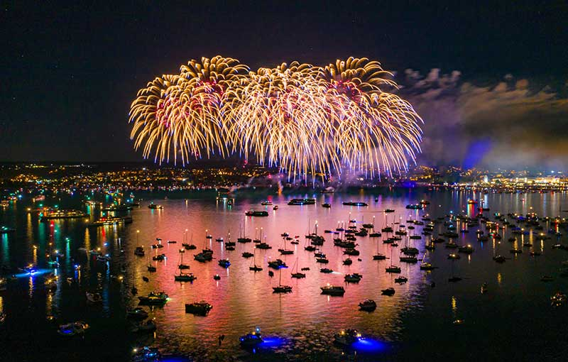
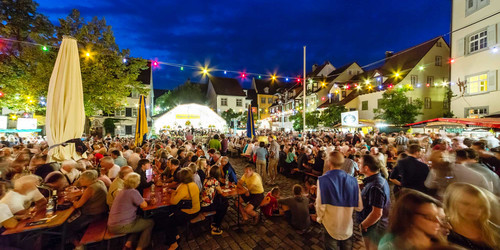
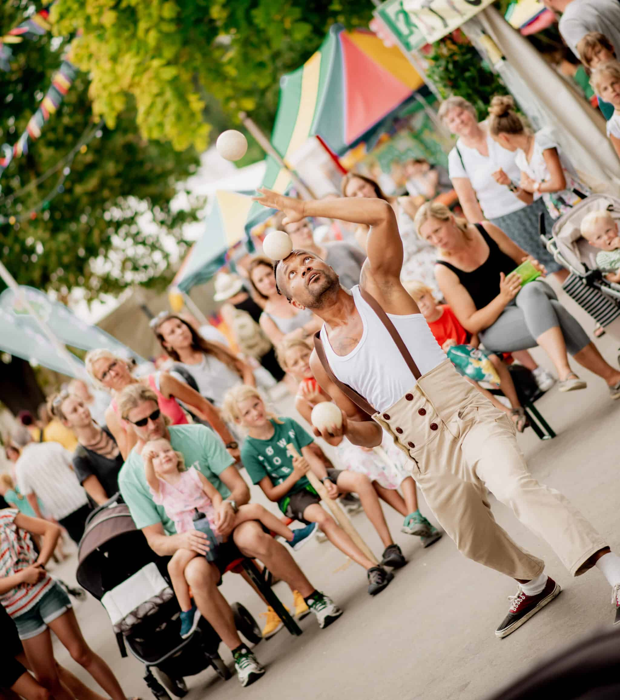
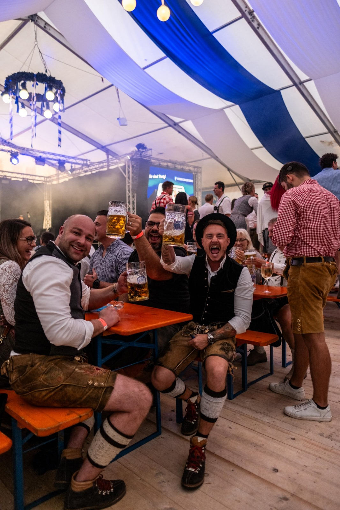

Seenachtfest

Seenachtfest Konstanz is a flagship summer festival on Lake Constance, bringing together live music, entertainment, local food and drink, and a spectacular fireworks display over the water. Held along the historic waterfront of Konstanz, the multi-day event attracts visitors from across the region and beyond, offering a vibrant celebration of culture, community, and the city's unique lakeside setting. Visit site
Meersburg Wine Festival
Held annually in September since 1974, the Meersburg Wine Festival celebrates the wines and culinary traditions of the Lake Constance region. Set in Meersburg's historic Castle Square, the event brings together wineries from across the region, alongside local food producers offering specialties such as baked goods, meats, cheeses, and Lake Constance fish. Over three days, visitors can sample a wide variety of regional wines while experiencing the area's rich food and wine culture in a historic setting. Visit site

40th Kulturufer Friedrichshafen

Celebrating its 40th edition in 2026, Kulturufer is one of Lake Constance's premier cultural festivals, transforming Friedrichshafen's waterfront into a vibrant festival promenade. Over ten days, the event showcases a diverse programme of live music, theatre, cabaret, and street performances, attracting visitors of all ages. Certified as a "Green Event BW," Kulturufer also demonstrates a strong commitment to environmental sustainability and social responsibility, combining cultural excellence with responsible event management. Visit site
Friedrichshafen Oktoberfest
The Friedrichshafen Oktoberfest is a traditional lakeside folk festival celebrating Bavarian culture in the unique setting of Lake Constance. Featuring live performances from renowned bands and local music groups, the event offers a lively programme of entertainment alongside classic fairground attractions, traditional food, and family-friendly activities. Centrally located on the waterfront, the festival attracts both local residents and visitors seeking an authentic Oktoberfest experience in a scenic maritime setting. Visit site

80th Bregenz Festival

To celebrate the 80th anniversary of the Bregenz Festival, a large-scale open-air exhibition will be presented along the Bregenz lakeside promenade from June to August 2026. The exhibition traces eight decades of the festival's history through iconic posters and highlights of its renowned Seebühne (Lake Stage) opera productions, offering visitors a free and immersive cultural experience. Set against the scenic backdrop of Lake Constance, the exhibition provides a unique opportunity to explore the evolution and legacy of one of Europe's most celebrated performing arts festivals. Visit site